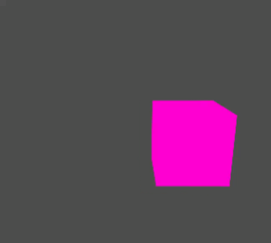
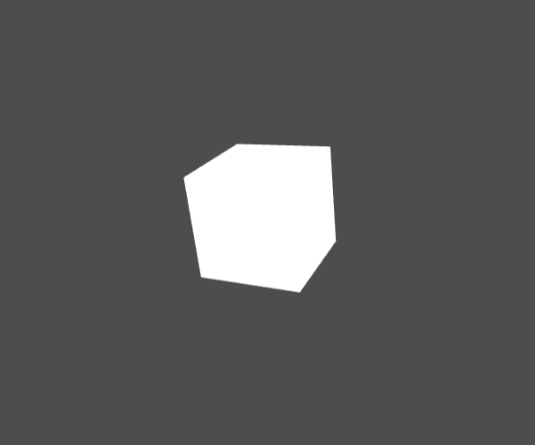

Transformationen
Ziel: Bewegen eines 3D-Objekts im Raum
In diesem Praktikum wollen wir mit Transformationen auf 3D-Objekten arbeiten.
Dazu wollen wir zunächst einen Würfel darstellen und diesen dann später
(inkl. Farbvariation) auf einer Kreisbahn animieren. Dazu konzentrieren wir
uns in diesem Praktikum vorranging auf Vertex-Shader.
Das Ergebnis soll dann in etwa wie die folgende Grafik aussehen:

Vorbereitung
Die folgenden Aufgaben setzen voraus, dass Sie die zugehörigen
Vorlesungmaterialien vollständig durchgearbeitet haben:
Schließen Sie zur Vorbereitung bitte unbedingt den Vorbereitungstest
im Lernraumkurs ab.
Aufgaben
Die folgenden Teilaufgaben lösen Sie bitte mit Hilfe dieses
Editors, in dem Sie
Ihre Lösungen interaktiv entwickeln und testen können.
Hinweis: Das ist dieses Mal ein anderer Editor als in den vorhergehenden Praktika,
da wir auch 3D-Objekte in OpenGL/WebGL erstellen und Vertex-Shader
implementieren wollen.
- Projekt laden
Laden Sie bitte die Datei 3D-Orbit-Cube.zip vom Lernraum herunter
und öffnen Sie diesen im Editor durch Klicken des Upload-Symbols ↑.
- Vorlage
In dem Projekt wird bereits ein 3D-Würfel erzeugt (in WebGL; siehe Reiter ganz links).
Schauen Sie sich den Code bitte einmal genauer an und machen Sie sich damit vertraut.
Eine besondere Rolle hat hier die render-Funktion, die unsere Pipeline startet
und dabei u.a. auch Vertex- und Fragment-Shader durchläuft.
- Ausführen
Führen Sie die Vorlage aus und schauen Sie sich das Ergebnis an.
- Ansicht ändern
In der Visualisierung können Sie die Ansicht des Würfels verändern.
Was wird hierbei (automatisch) angepasst? Welche Teile der Transformationen
sind hiervon betroffen?

- Objekt bewegen
Verändern Sie nun die Position des Würfels im Raum durch eine Translation.
Nehmen Sie diese Veränderung im Vertex-Shader vor (siehe Reite VS).
- Kreisbahn
Der Würfel soll sich nun kontinuierlich auf einer Kreisbahn
um den Ursprung des Weltkoordinatensystems bewegen.
Dabei darf die Geometrie des Würfels nicht verändert werden.
Lediglich seine Position soll sich entlang der Kreisbahn ändern.
- Kreisbahn konfigurierbar
Erweitern Sie Ihre Implementierung dahingehend, dass der Radius
der Kreisbahn als Variable innerhalb des Vertex-Shaders konfigurierbar wird.
- Farbverlauf für Würfel
Geben Sie Ihrem Würfel noch einen Farbverlauf (-> Fragment-Shader). Dieser soll sich
in Abhängigkeit von der 3D-Position des Würfels ändern.